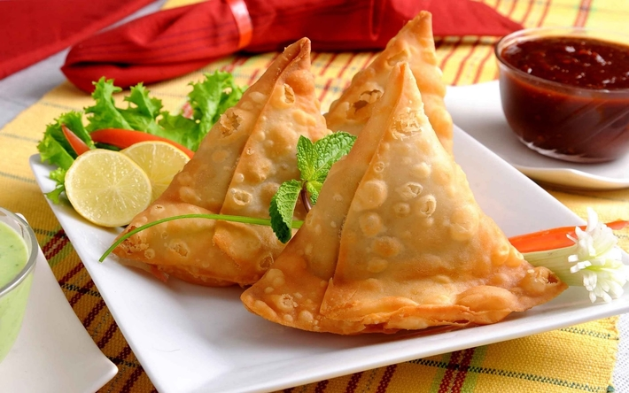
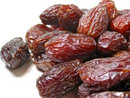

My Favorite Foods
Dosa

A Dosa is a south indian dish that ressembles a crepe. A Dosa's exterior is made from a batter of ferminated rice or lentil.
A dosa is usually served with chutney and sambar, which are essentially condimonts.
There are multiple types of dosa, such as:
- Masala Dosa: it includes Potatoes, and seasoning are served inside the Dosa, adding more flavor
- Cheese Dosa: it is served inside the Dosa, almost like a cheese quesiddila
- Benne Dosa: translates to butter dosa.
Samosa
A samosa is a fried or baked pastry that can contain:
- Potatoes
- Onions
- Peas
- Chicken or other meats
The samosa has a crunchy exterior, but a soft interior
A soamosa is also typically eaten with some sort of chutney on the side
Dates
Dates are a type of fruit, that are chewy and very sweet
They are also very nutritious and high in fiber
Dates are commonly brown in color